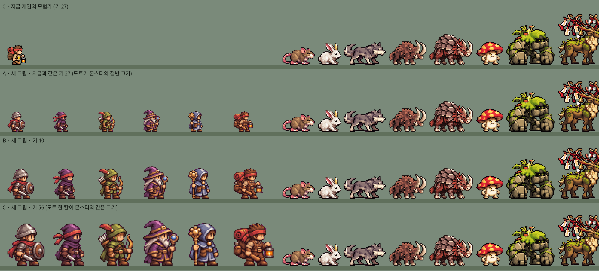

<title>모험가 크기 비교</title>
<meta name="claude:viewport-fit-sides" content="cover">
<link rel="stylesheet" href="https://fonts.googleapis.com/css2?family=Do+Hyeon&family=IBM+Plex+Sans+KR:wght@400;600&display=swap">
<style>
/* 배치: 한 줄 흐름 — 머리 → 순서(번호: 실제 차례) → 붙일 그림 셋(그림 · 크게 보기 · 저장) → 부탁 글 넷(글 · 복사) → 받은 뒤 볼 것.
   색은 궁수 그림에서: 두건 초록 · 가죽 갈색 · 버클 금색. 그림은 밝은 회색 판 그대로 보인다 */
:root {
  --bg: #eeedf4; --surface: #f9f8fc; --panel: #dcd9e8; --fg: #1c1a26; --muted: #5a5770; --line: #c8c4d8;
  --accent: #8a2f2a; --accent-fg: #ffffff; --label: #7a5a0c; --sheet: #c8ccd6; --code: #f3f1f9;
  --font-display: "Do Hyeon", "Apple SD Gothic Neo", "Malgun Gothic", "Noto Sans KR", system-ui, sans-serif;
  --font-body: "IBM Plex Sans KR", "Apple SD Gothic Neo", "Malgun Gothic", "Noto Sans KR", system-ui, sans-serif;
  --font-data: ui-monospace, "SFMono-Regular", Menlo, Consolas, monospace;
}
@media (prefers-color-scheme: dark) { :root:not([data-theme="light"]) { --bg: #16151d; --surface: #1f1d29; --panel: #2e2b3c; --fg: #ebe7f2; --muted: #a39fb4; --line: #383548; --accent: #d0564c; --accent-fg: #ffffff; --label: #f0c45a; --sheet: #c8ccd6; --code: #1b1a24; color-scheme: dark } }
:root[data-theme="dark"] { --bg: #16151d; --surface: #1f1d29; --panel: #2e2b3c; --fg: #ebe7f2; --muted: #a39fb4; --line: #383548; --accent: #d0564c; --accent-fg: #ffffff; --label: #f0c45a; --sheet: #c8ccd6; --code: #1b1a24; color-scheme: dark }
*, *::before, *::after { box-sizing: border-box }
body { background: var(--bg); color: var(--fg); font-family: var(--font-body); font-size: 15px; line-height: 1.6; word-break: keep-all; overflow-wrap: break-word; padding-block: 28px 56px; padding-left: max(16px, env(safe-area-inset-left, 0px)); padding-right: max(16px, env(safe-area-inset-right, 0px)) }
.wrap { max-width: 820px; margin-inline: auto; display: grid; gap: 44px; grid-template-columns: minmax(0, 1fr) }
h1, h2, h3, p, ul, ol, figure, pre { margin: 0 }
ul, ol { padding: 0; list-style: none }
h1, h2 { font-family: var(--font-display); font-weight: 400; text-wrap: balance; line-height: 1.15 }
h1 { font-size: clamp(30px, 7vw, 42px) }
h2 { font-size: 24px }
h3 { font-size: 16px; font-weight: 600 }
.top { display: grid; gap: 10px }
.eyebrow { color: var(--label); font-size: 13px; font-weight: 600; letter-spacing: .04em }
.lede { max-width: 36em }
.sec { display: grid; gap: 18px; grid-template-columns: minmax(0, 1fr) }
.note { color: var(--muted); font-size: 14px; max-width: 44em }
.steps { counter-reset: n; display: grid; gap: 12px; max-width: 46em }
.steps li { counter-increment: n; padding-left: 34px; position: relative }
.steps li::before { content: counter(n); position: absolute; left: 0; top: 1px; width: 24px; height: 24px; display: grid; place-items: center; font: 400 15px/1 var(--font-display); background: var(--accent); color: var(--accent-fg); border-radius: 4px }
.item { display: grid; gap: 10px; grid-template-columns: minmax(0, 1fr) }
.item .what { display: grid; gap: 2px }
.row { display: flex; flex-wrap: wrap; gap: 8px; align-items: center }
.msg { color: var(--muted); font-size: 13px }
.msg:empty { display: none }
.btn { font: 600 14px/1 var(--font-body); padding: 11px 14px; border-radius: 6px; border: 1px solid var(--line); background: var(--surface); color: var(--fg); cursor: pointer }
.btn[aria-pressed="true"] { background: var(--fg); border-color: var(--fg); color: var(--bg) }
.btn.go { background: var(--accent); border-color: var(--accent); color: var(--accent-fg) }
.btn:disabled { opacity: .6; cursor: default }
.btn:focus-visible { outline: 2px solid var(--label); outline-offset: 2px }
.frame { overflow-x: auto; background: var(--sheet); border: 1px solid var(--line); border-radius: 8px }
.frame img { display: block; width: 100%; height: auto; image-rendering: pixelated }
.frame.zoomed img { width: var(--zw); max-width: none }
.frame.soft img { image-rendering: auto }
.attach { color: var(--label); font-size: 13px; font-weight: 600 }
.req { font: 13.5px/1.65 var(--font-body); white-space: pre-wrap; background: var(--code); border: 1px solid var(--line); border-radius: 8px; padding: 14px 16px; max-height: 22em; overflow: auto; -webkit-user-select: text; user-select: text }
.list { display: grid; gap: 10px; max-width: 46em }
.list li { padding-left: 18px; position: relative }
.list li::before { content: ""; position: absolute; left: 2px; top: .62em; width: 6px; height: 6px; background: var(--label) }

.mock { position: relative; width: 100%; aspect-ratio: 2172 / 724; container-type: inline-size; border: 2px solid #000; overflow: hidden; border-radius: 6px; background: #c9d6c2; }
.mock .b { position: absolute; left: 0; right: 0; display: flex; align-items: center; justify-content: center; text-align: center; font-size: 2.9cqw; line-height: 1.25; color: #f2f4e8; box-sizing: border-box; border-top: 1px dashed rgba(0, 0, 0, .45); padding: 0 1cqw; }
.pts { margin: 0; padding-left: 1.2em; display: grid; gap: 4px; }
</style>
<main class="wrap">
  <header class="top"><p class="eyebrow">미궁도시 라비린토스 · 모험가</p><h1>몬스터 옆에 세워 보기</h1><p class="lede">받아 오신 여섯 명을 진짜 도트(키 56칸)로 정리해서, 게임 안 몬스터 그림 옆에 세 가지 크기로 세웠습니다. A · B · C 가운데 크기를 골라 주세요.</p></header>
  <section class="sec"><div class="what item"><h2>세 가지 크기</h2><p class="note">몬스터는 게임에 들어 있는 그림 그대로입니다(왼쪽부터 들쥐 · 뿔토끼 · 들늑대 · 멧돼지 · 갑옷 멧돼지 · 점박이 버섯 · 이끼 골렘 · 숲의 수호령). 맨 윗줄은 지금 게임에 들어 있는 모험가 크기입니다.</p><p class="note" id="save-hint">저장 단추가 보이지 않으면 그림을 길게 눌러 저장해 주세요.</p></div>
    <div class="item"><div class="frame" id="f-a"></div><div class="row"><button class="btn" type="button" data-zoom="f-a" aria-pressed="false">크게 보기</button><button class="btn go" type="button" data-save="scale_compare.png" hidden>저장</button><span class="msg" role="status"></span></div></div>
    <ul class="list"><li><b>A · 지금과 같은 키</b> — 화면 배치를 안 바꿔도 됩니다. 대신 모험가의 도트가 몬스터 도트의 절반 크기라, 나란히 서면 모험가만 잘게 보입니다. 들늑대보다 키가 작습니다.</li><li><b>B · 키 40</b> — 들늑대보다 조금 크고 멧돼지와 비슷한 키. 도트 크기 차이가 덜 납니다.</li><li><b>C · 키 56</b> — 도트 한 칸이 몬스터와 똑같은 크기라 한 그림처럼 어울립니다. 사람이 늑대의 두 배, 이끼 골렘과 비슷한 키가 됩니다. 화면에서 모험가가 지금의 두 배로 커지므로 원정 장면의 줄 간격과 작은 원정 창을 다시 맞춰야 합니다.</li></ul>
  </section>
</main>
<script>
const $$ = s => Array.from(document.querySelectorAll(s));
const msgOf = b => b.parentElement.querySelector('.msg');
const W = { 'f-a': 3180 };
$$('[data-zoom]').forEach(b => { const f = document.getElementById(b.dataset.zoom); f.style.setProperty('--zw', W[b.dataset.zoom] + 'px');
  b.addEventListener('click', () => { const on = f.classList.toggle('zoomed'); b.setAttribute('aria-pressed', on ? 'true' : 'false'); }); });
// 글 복사: 안 되면 글을 골라 둔다
$$('[data-copy]').forEach(b => b.addEventListener('click', async () => {
  const pre = document.getElementById(b.dataset.copy), msg = msgOf(b);
  try { await navigator.clipboard.writeText(pre.textContent); msg.textContent = '복사했습니다.'; }
  catch (_) { const r = document.createRange(); r.selectNodeContents(pre); const s = window.getSelection(); s.removeAllRanges(); s.addRange(r); pre.focus(); msg.textContent = '여기서는 바로 복사가 안 됩니다. 글을 골라 두었으니 길게 눌러 복사해 주세요.'; }
}));
// 저장 (보는 쪽에서 저장을 받아 줄 때만 단추를 보인다)
(async () => {
  let dl = null;
  try { dl = window.claude && window.claude.use ? await window.claude.use('downloads') : null; } catch (_) { dl = null; }
  if (!dl) return;
  document.getElementById('save-hint').hidden = true;
  $$('[data-save]').forEach(b => { b.hidden = false; b.addEventListener('click', async () => {
    const msg = msgOf(b); b.disabled = true; msg.textContent = '';
    try { const blob = await (await fetch(b.dataset.save)).blob(); await dl.save({ filename: b.dataset.save, data: blob }); msg.textContent = '저장했습니다.'; }
    catch (e) { const c = e && e.code; msg.textContent = c === 'declined' ? '저장을 취소했습니다.' : c === 'rate_limited' ? '잠시 뒤에 다시 눌러 주세요.' : '여기서는 저장할 수 없습니다. 그림을 길게 눌러 저장해 주세요.'; }
    b.disabled = false; }); });
})();
</script>